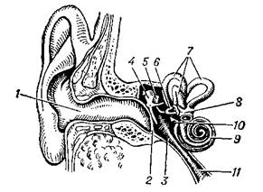

3 Восприятие звука человеком. Слух
Слухом называется способность организма получать информацию о внешнем мире, воспринимая звуковые колебания окружающей среды с помощью специального нервного механизма – звукового (слухового) анализатора. Слуховой анализатор условно разделяют на три отдела: периферический, включающий звуковоспринимающие органы и рецепторы, преобразующие энергию звуковых колебаний в энергию нервного возбуждения; проводниковый - нейроны, проводящие возбуждение; центральный, в котором нейроны воспринимающих центров производят обработку информации.
У человека к слуховому анализатору относятся наружное, среднее и внутреннее ухо, нервные проводящие пути слуховой системы, проходящие от кортиева органа в слуховую область коры головного мозга, и слуховая область коры.
Схема строения человеческого уха приведена на рисунке:

1 — наружный слуховой проход; 2 — барабанная перепонка; 3 — полость среднего уха (барабанная полость); 4 — молоточек; 5 — наковальня; 6 — стремечко; 7 — полукружные каналы; 8 — преддверие; 9 — улитка; 10 — овальное окно; 11 — евстахиева труба.
Наружное
ухо – это ушная раковина и примыкающий к ней наружный слуховой проход. Наружное
ухо отделено от среднего кожной мембраной -барабанной перепонкой. Среднее ухо
представляет собой заполненную воздухом полость, соединенную с носоглоткой
евстахиевой трубой. В барабанной полости находится система слуховых косточек –
молоточек, наковальня и стремечко. Рукоятка молоточка срослась с барабанной
перепонкой, головка молоточка гибко связана с наковальней, а короткий отросток
наковальни с другой стороны соединен с головкой стремечка. Основание стремечка
заходит через овальное окно во внутреннее ухо. Внутреннее ухо (улитка)
представляет собой капсулу, заполненную жидкостью. Улитка длиной около 35 мм
образует два витка. Полость улитки по всей длине разделена перегородкой
(основной мембраной) на две части. На основной мембране расположен
звуковоспринимающий кортиев орган, состоящий из множества рецепторных волосковых
клеток.
Колебания барабанной перепонки, вызываемые звуковыми волнами, через систему слуховых косточек передаются жидкости в улитке. Колебания основной мембраны приводят в движение волосковые клетки кортиева органа, в которых возбуждается электрический потенциал. Этот потенциал и приводит к возбуждению волокон слухового нерва, который передает соответствующий сигнал в слуховой центр коры головного мозга.
Видеофрагмент "Строение уха" (0:41):
К
основным свойствам слуха можно отнести способность различать частоту и
интенсивность звуков, анализировать сложные звуки и к оценивать их свойства,
определять положение источника звука в пространстве, выделять один из звуковых
сигналов на фоне других и так далее. Свойства слуха различны у разных животных.
Более высокоорганизованные животные обладают существенно большим совершенством
свойств слуха. Например, слух человека обладает рядом специфических свойств,
связанных с восприятием речи.
К
количественным характеристикам слуха относятся слуховая чувствительность (порог слышимости), верхний предел
слухового восприятия (порог болевого ощущения или болевой порог) и частотный диапазон
слышимости.
У
разных животных частотный диапазон слышимых звуков различен. Например, для
кузнечиков он составляет 10 Гц – 100 кГц, для лягушки 50 Гц – 30 кГц, верхняя
граница слышимости для летучих мышей 100-150 кГц. Область слышимых для человека
звуков приведена на рисунке.
Видно,
что человек воспринимает на слух звуки в диапазоне частот от 16 Гц до 20 кГц (слышимый звук). Звуковые волны с
частотами ниже 16 Гц называются инфразвуком, а с частотами выше 20
кГц – ультразвуком.
Субъективное восприятие слышимого звука человеком характеризуется высотой, громкостью и тембром. Рассмотрим связь этих характеристик с физическими параметрами звуковой волны.